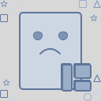

<sidebar></sidebar>
<div class="home" *ngIf="isFeedIsSelected">
  <header>
    <span>
      <h1>{{ feed.title }}</h1>
    </span>

    <div class="filters">
      <div class="filters-content">
        <label>filters:</label>
        <ul class="ui secondary pointing menu">
          <li [ngClass]="['item', isErrorsShown && isWarningsShown ? 'active' : '']" (click)="showAllMessages()">show all</li>
          <li [ngClass]="['item', isErrorsShown && !isWarningsShown ? 'active' : '']" (click)="showErrors()">errors</li>
          <li [ngClass]="['item', !isErrorsShown && isWarningsShown? 'active' : '']" (click)="showWarnings()">warnings</li>
        </ul>

        <div class="settings" (click)="showSettingsModal()">
          <svg xmlns="http://www.w3.org/2000/svg" width="16" height="16" viewBox="0 0 24 24" fill="none" stroke="#93959B" stroke-width="2" stroke-linecap="square" stroke-linejoin="bevel"><line x1="4" y1="21" x2="4" y2="14"></line><line x1="4" y1="10" x2="4" y2="3"></line><line x1="12" y1="21" x2="12" y2="12"></line><line x1="12" y1="8" x2="12" y2="3"></line><line x1="20" y1="21" x2="20" y2="16"></line><line x1="20" y1="12" x2="20" y2="3"></line><line x1="1" y1="14" x2="7" y2="14"></line><line x1="9" y1="8" x2="15" y2="8"></line><line x1="17" y1="16" x2="23" y2="16"></line></svg>
        </div>
      </div>
    </div>
  </header>

  <div class="container">
    <div class="ui message success" *ngIf="errors.length === 0 && warnings.length === 0">
      Well done, no errors found!
    </div>

    <card-container
      *ngIf="errors.length > 0 && warnings.length > 0"
      [errors]="errors"
      [warnings]="warnings"
      [isErrorsShown]="isErrorsShown"
      [isWarningsShown]="isWarningsShown">
    </card-container>
  </div>

  <settings
    *ngIf="isSettingsIsShown"
    (emitter)="hideSettingsModal($event)"
    [feedId]="feed.id"
    [totalAmount]="errors.length + warnings.length"
  ></settings>
</div>

<div class="home empty-state" *ngIf="!isFeedIsSelected">
  
</div>